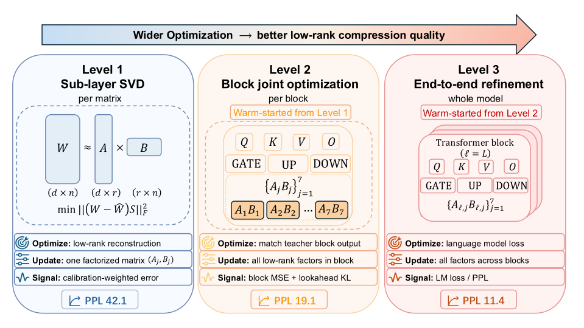

Why it matters왜 중요한가
Almost every recent SVD compression paper improves the same thing: the objective for one weight matrix, or the rank budget handed to it. This one argues that the whole family has been optimizing the wrong unit.
최근의 SVD 압축 논문 대부분은 같은 것을 개선한다. 하나의 가중치 행렬에 대한 목적함수, 또는 그 행렬에 배정되는 rank 예산이다. 이 논문은 그 계열 전체가 잘못된 단위를 최적화해 왔다고 주장한다.
The argument is structural. Activation-whitened SVD solves its own objective exactly — you cannot beat it at the per-matrix game. But truncation errors from the seven attention and MLP projections do not stay in their own matrices: they interact through the block's residual connections and nonlinearities, and then compound along the residual stream across blocks. Neither interaction is visible to a per-matrix loss, however cleverly that loss is whitened or however carefully ranks are allocated. So the authors keep the decomposition fixed and widen what the optimizer can see: matrix → block → whole model, warm-starting each level from the last. Worth noting for anyone working on rank allocation: this paper uses a uniform rank for every weight matrix and still beats the mixed-rank methods (DipSVD, Dobi-SVD) it compares against — which makes scope and allocation look like orthogonal axes that nobody has yet combined.
논지는 구조적이다. activation-whitened SVD는 자기 목적함수를 정확히 푼다. 행렬별 게임에서는 이길 수 없다. 그러나 attention과 MLP의 일곱 projection에서 생긴 절단 오차는 각자의 행렬 안에 머물지 않는다. 블록의 residual 연결과 비선형성을 통해 서로 상호작용하고, 그다음 블록을 넘어 residual stream을 따라 누적된다. 이 두 상호작용은 행렬별 손실에는 보이지 않는다. 손실을 아무리 영리하게 화이트닝해도, rank를 아무리 정교하게 배분해도 마찬가지다. 그래서 저자들은 분해 방식은 고정한 채, 옵티마이저가 볼 수 있는 범위를 넓힌다. 행렬 → 블록 → 모델 전체로 가면서 각 단계를 이전 단계에서 warm-start한다. rank allocation을 연구한다면 하나 짚어둘 점이 있다. 이 논문은 모든 가중치 행렬에 균일한 rank를 쓰면서도 비교 대상인 혼합 rank 방법들(DipSVD, Dobi-SVD)을 이긴다. 범위와 배분이 아직 아무도 결합하지 않은 서로 직교하는 축으로 보인다는 뜻이다.

By the numbers핵심 숫자
LLaMA-7B at 60% compression60% 압축 LLaMA-7B
| Method | WikiText-2 ↓ | PTB ↓ | C4 ↓ |
|---|---|---|---|
| Uncompressed | 5.68 | 8.35 | 7.34 |
| SVD-LLM | 53.7 | 400 | 300 |
| Dobi-SVD | 46.2 | 200 | 200 |
| SAES-SVD | 22.0 | 117 | 94.0 |
| Ours — L1 (per-matrix SVD) | 42.1 | 182 | 201 |
| Ours — L2 (+ block opt.) | 19.1 | 95.8 | 91.8 |
| Ours — L3 (+ end-to-end) | 11.4 | 62.8 | 57.2 |
In one diagram한 장의 그림
The idea in three pieces아이디어를 세 조각으로
Cross-frontier reconstruction
The naive block target is "match what the compressed block would have produced from the compressed input." The authors instead target the original next hidden state hℓ+1 while feeding the already-degraded input ĥℓ. The compressed block is therefore asked to undo drift it did not cause, absorbing upstream error rather than passing it on. On LLaMA-7B this beats the same-input target by 2.6 perplexity points.
순진한 블록 타깃은 "압축된 입력에서 압축된 블록이 내놓았을 값을 맞춰라"이다. 저자들은 대신 이미 손상된 입력 ĥℓ를 넣으면서 원본 다음 hidden state hℓ+1를 타깃으로 삼는다. 따라서 압축된 블록은 자기가 만들지 않은 드리프트까지 되돌리도록 요구받고, 상류의 오차를 넘기는 대신 흡수한다. LLaMA-7B에서 이 방식은 same-input 타깃보다 perplexity 2.6점 앞선다.
Next-block vocabulary lookahead
Block MSE weights every hidden direction equally, but the eventual loss does not — it amplifies errors in directions with small hidden-state norms. So a small probe Pℓ+1 is trained to project the next block's output into vocabulary space and imitate the full model's token distribution; the block loss then adds a KL term in that space. This is the single most impactful design choice in the paper, amplifying the perplexity reduction by 2–3× over the target choice alone.
블록 MSE는 모든 hidden 방향에 같은 가중치를 주지만 최종 손실은 그렇지 않다. hidden state의 노름이 작은 방향의 오차를 증폭시킨다. 그래서 작은 probe Pℓ+1을 학습시켜 다음 블록의 출력을 어휘 공간으로 투영하고 전체 모델의 토큰 분포를 모방하게 한 뒤, 블록 손실에 그 공간에서의 KL 항을 더한다. 논문에서 가장 영향력이 큰 설계 선택이며, 타깃 선택만 했을 때보다 perplexity 감소폭을 2~3배 키운다.
The block stage is a regularizer
L2 is not just a better warm start for L3. Skip it and in-distribution perplexity barely moves (11.90 vs 11.37) — but PTB degrades by 24 points, and more end-to-end training never closed that gap under the tested schedules. Matching hidden states forces the compressed block to preserve directions the calibration-token LM loss has no reason to reward. The effect sharpens as data shrinks: the PTB gap grows from Δ=22 at 256 calibration samples to Δ=72 at 32.
L2는 L3를 위한 더 나은 출발점이기만 한 게 아니다. 건너뛰면 in-distribution perplexity는 거의 그대로지만(11.90 대 11.37) PTB는 24점 나빠지고, 시험한 스케줄에서는 end-to-end 학습을 더 해도 그 격차가 메워지지 않았다. hidden state를 맞추는 일이, 캘리브레이션 토큰의 LM 손실로는 보상할 이유가 없는 방향들까지 압축된 블록이 보존하도록 강제하기 때문이다. 데이터가 적을수록 효과는 뚜렷해진다. PTB 격차는 캘리브레이션 256샘플에서 Δ=22였다가 32샘플에서 Δ=72로 벌어진다.
Refining factors, not adding them
The usual way to recover a broken compressed model is LoRA on external instruction data — which quietly changes the setting from self-contained post-training compression to data-dependent recovery. L3 instead treats the existing A and B as the trainable variables and descends the ordinary next-token loss on the calibration set already required for compression. No adapters, no inference-time parameters, no Alpaca.
망가진 압축 모델을 되살리는 통상적 방법은 외부 instruction 데이터로 LoRA를 돌리는 것이다. 그러면 자족적인 post-training 압축이라는 설정이 슬그머니 데이터 의존적 복구로 바뀐다. L3는 대신 이미 존재하는 A와 B 자체를 학습 변수로 삼아, 압축에 어차피 필요했던 캘리브레이션 집합 위에서 평범한 다음 토큰 손실을 내려간다. 어댑터도, 추론 시 추가 파라미터도, Alpaca도 없다.
How it works어떻게 작동하나
- Whiten, then truncate. 화이트닝하고 절단한다. Run the dense model over 256 WikiText-2 sequences of 2048 tokens, cache every block-boundary hidden state, and take the whitened SVD of each of the seven projections at a uniform rank set by the removal ratio ρ. This is exactly SVD-LLM, used as a starting point rather than a contribution.2048토큰짜리 WikiText-2 시퀀스 256개를 원본 모델에 통과시키고, 모든 블록 경계의 hidden state를 캐싱한 뒤, 일곱 projection 각각에 대해 제거 비율 ρ가 정하는 균일한 rank로 화이트닝된 SVD를 취한다. 이것은 정확히 SVD-LLM이며, 기여가 아니라 출발점으로 쓰인다.
- Fit a lookahead probe for the block. 블록마다 lookahead probe를 학습시킨다. For block ℓ, train Pℓ+1 (200 Adam steps) so that its projection of block ℓ+1's output into vocabulary space matches the full model's final token distribution in KL. It is a training-only surrogate for "everything downstream," and it costs about 6 minutes in total.블록 ℓ에 대해 Pℓ+1을 200 Adam 스텝으로 학습시켜, 블록 ℓ+1의 출력을 어휘 공간으로 투영한 것이 전체 모델의 최종 토큰 분포와 KL 기준으로 맞도록 한다. "그 아래 전부"에 대한 학습 전용 대리물이며, 총 6분 정도가 든다.
- Jointly optimize all seven factor pairs. 일곱 쌍의 인수를 함께 최적화한다. Minimize the block loss — cross-frontier MSE plus λ times the lookahead KL — over {Aℓ,j, Bℓ,j} for j ∈ {q,k,v,o,gate,up,down} with Adam and per-block early stopping.블록 손실(cross-frontier MSE + λ × lookahead KL)을 j ∈ {q,k,v,o,gate,up,down}의 {Aℓ,j, Bℓ,j}에 대해 Adam과 블록별 early stopping으로 최소화한다.
- Sweep front to back, carrying the damage forward. 앞에서 뒤로 훑으면서 손상을 그대로 물려준다. Recompute ĥℓ+1 from the just-compressed block and move on, so every block is optimized against the input it will actually receive at inference. The final block has no successor, so its lookahead term is dropped. This sequential loop is 98.8% of the stage's 13.76 hours.방금 압축한 블록에서 ĥℓ+1을 다시 계산하고 다음으로 넘어간다. 그래서 모든 블록은 추론 시 실제로 받게 될 입력에 대해 최적화된다. 마지막 블록은 후속 블록이 없으므로 lookahead 항을 뺀다. 이 순차 루프가 해당 단계 13.76시간의 98.8%를 차지한다.
- Unfreeze everything and descend the LM loss. 전부 풀고 LM 손실을 내려간다. Warm-start from L2 and train all factors across all blocks end-to-end with AdamW at 2×10⁻⁵, early-stopped on the WikiText-2 validation split. Forty-two minutes, and the only place any held-out data enters the pipeline.L2에서 warm-start해 모든 블록의 모든 인수를 AdamW(2×10⁻⁵)로 end-to-end 학습하고, WikiText-2 검증 split에서 early stopping한다. 42분이 걸리며, 파이프라인에서 held-out 데이터가 들어오는 유일한 지점이다.
What to take away그래서, 가져갈 것
The unit of post-training compression should be the computation graph over which truncation errors interact, not the weight matrix. Widening the scope bought a 3.7× perplexity reduction with no change to the decomposition, no extra parameters, and no external data.
post-training 압축의 단위는 절단 오차가 상호작용하는 계산 그래프여야지 가중치 행렬이 아니다. 범위를 넓힌 것만으로 분해 방식 변경도, 추가 파라미터도, 외부 데이터도 없이 perplexity가 3.7배 줄었다.
Offline compute and calibration data are partly interchangeable. The 13.76-hour block stage is worth it at 256 sequences, but at a 1024-sequence pool, simply skipping it beats the full chain on WikiText-2 and PTB. That trade-off is the real finding, and the authors say so themselves.
오프라인 연산과 캘리브레이션 데이터는 부분적으로 서로 대체 가능하다. 13.76시간짜리 블록 단계는 256 시퀀스에서는 값어치를 하지만, 1024 시퀀스 풀에서는 그냥 건너뛰는 편이 WikiText-2와 PTB에서 전체 체인을 이긴다. 이 교환관계가 진짜 발견이고, 저자들도 그렇게 말한다.
Perplexity is not capability. At 60% removal every variant scores 0% strict exact match on GSM8K and produces degenerate, repetitive summaries — while WikiText-2 perplexity looks almost respectable. Which capabilities survive appears to be set by the calibration distribution, not by the compression ratio.
perplexity는 능력이 아니다. 60% 제거에서 모든 변형이 GSM8K strict exact match 0%를 받고 반복적이고 퇴화된 요약을 내놓는다. 그동안 WikiText-2 perplexity는 제법 그럴듯해 보인다. 어떤 능력이 살아남는지는 압축률이 아니라 캘리브레이션 분포가 정하는 것으로 보인다.
Compressing 58% of the parameters made decoding 6–14% slower. Each projection now runs two unfused GEMMs, so the win is peak VRAM (down 49–56%), not latency, until someone writes a fused AB kernel.
파라미터의 58%를 압축했더니 디코딩이 6~14% 느려졌다. 이제 각 projection이 융합되지 않은 GEMM 두 번을 돌기 때문이다. 누군가 융합된 AB 커널을 짜기 전까지 이득은 지연시간이 아니라 최대 VRAM(49~56% 감소)이다.